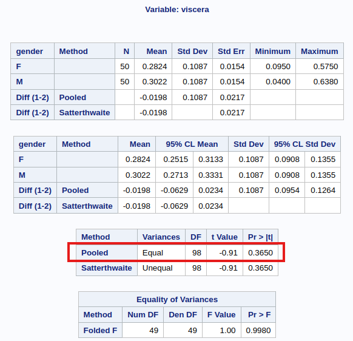
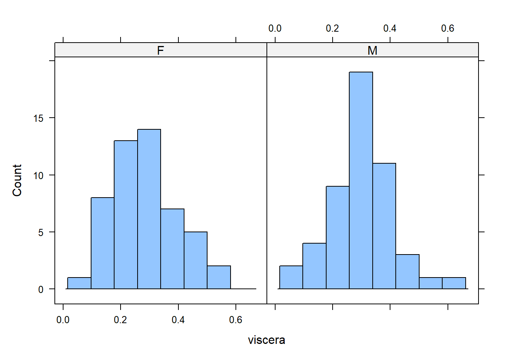
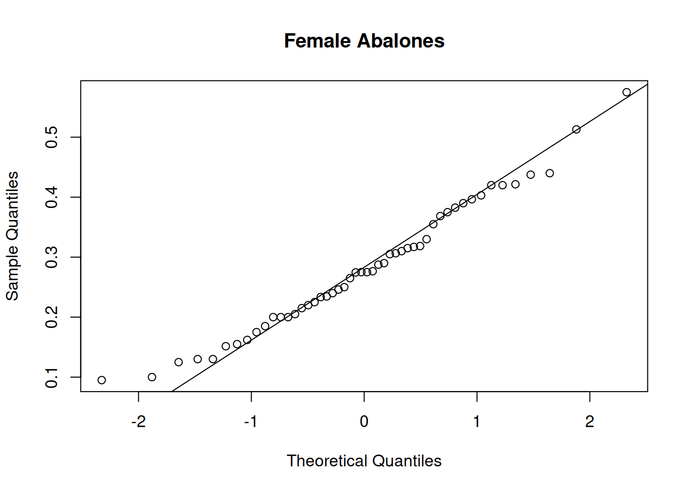
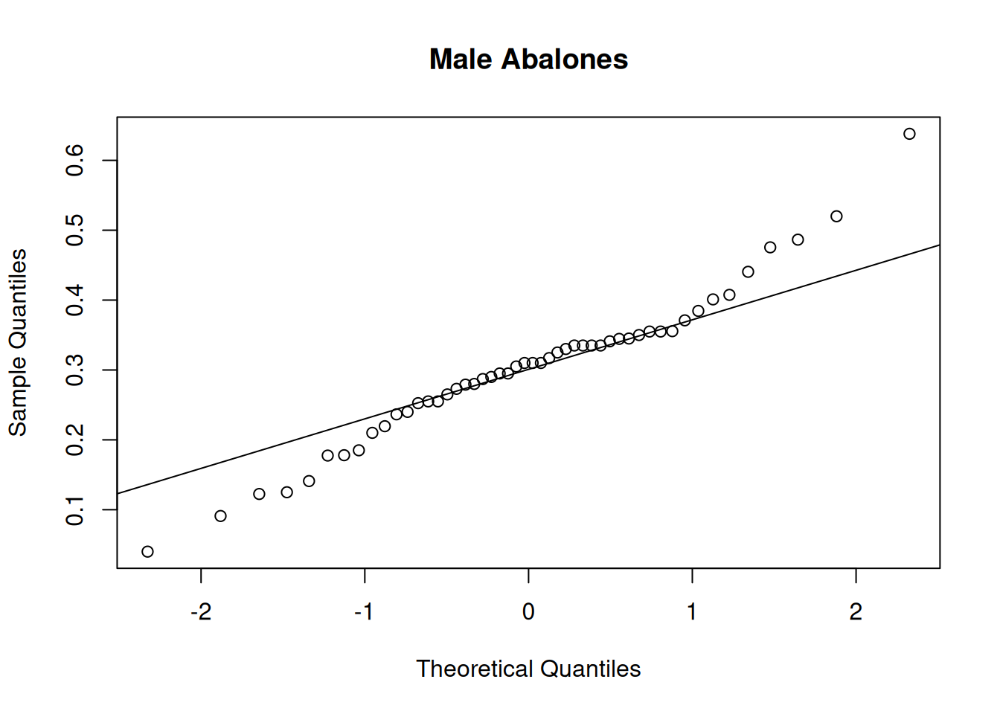
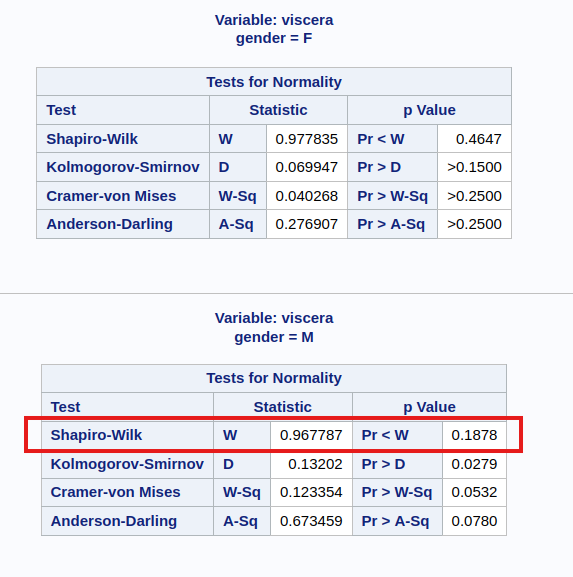
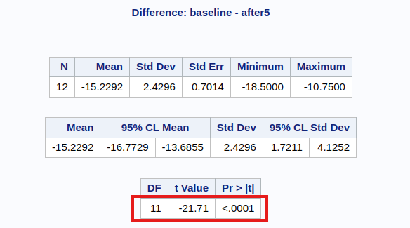
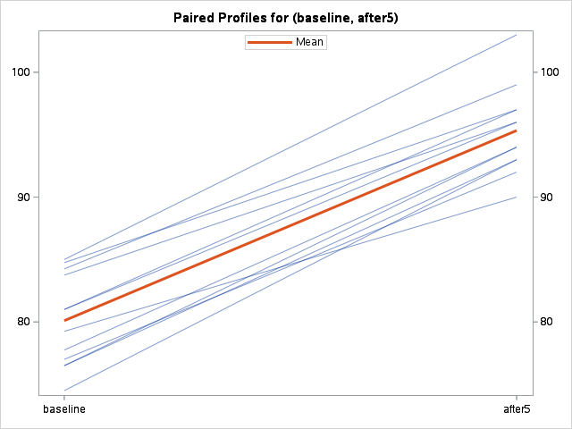
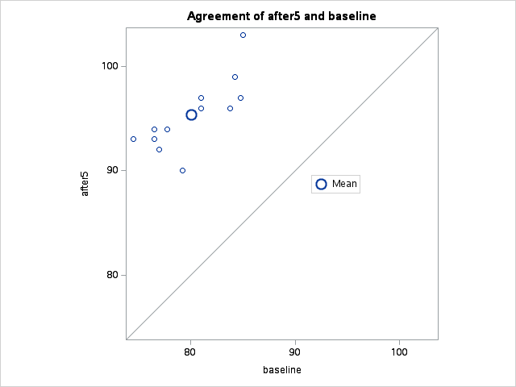
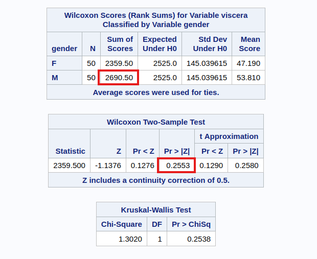
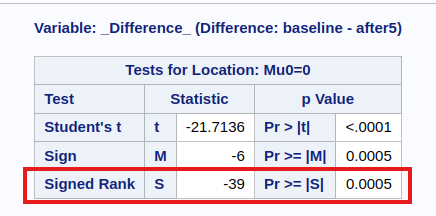

Two Sample t-test
data: x and y
t = 0.91008, df = 98, p-value = 0.365
alternative hypothesis: true difference in means is not equal to 0
95 percent confidence interval:
-0.02336287 0.06294287
sample estimates:
mean of x mean of y
0.30220 0.28241 7 Two-sample Hypothesis Tests
7.1 Introduction
In this topic, we introduce the routines for a common class of hypothesis tests: the scenario of comparing the location parameter of two groups. This technique is commonly used in A/B testing to assess if an intervention has resulted in a significant difference between two groups.
Hypothesis tests are routinely abused in many ways by investigators. Such tests typically require strong assumptions to hold, and can result in false positives or negatives. As such, personally, I prefer to use confidence intervals to make an assessment of the significance of a result. However, in this topic, we introduce how the \(p\)-values can be obtained for these hypothesis tests.
7.2 Procedure for Significance Tests
As a recap, here is the general approach for conducting a hypothesis test:
Step 1: Assumptions
In this step, we verify that the assumptions required for the test are valid. In some tests, this step is carried out at the end of the others, but it is always essential to perform. Some tests are very sensitive to the assumptions - this is the main reason that the class of robust statistics was invented.
Step 2: State the hypotheses and significance level
The purpose of hypothesis testing is to make an inferential statement about the population from which the data arose. This inferential statement is what we refer to as the hypothesis regarding the population.
Note
A hypothesis is a statement about population, usually claiming that a parameter takes a particular numerical value or falls in a certain range of values.
The hypotheses will be stated as a pair: The first hypothesis is the null hypothesis \(H_0\) and the second is the alternative hypothesis \(H_1\). Both statements will involve the population parameter (not the data summary) of interest. For example, if we have a sample of observations from two groups \(A\) and \(B\), and we wish to assess if the mean of the populations is different, the hypotheses would be
\[\begin{eqnarray*} H_0: & \mu_A = \mu_B \\ H_1: & \mu_A \ne \mu_B \end{eqnarray*}\]
\(H_0\) is usually a statement that indicates “no difference”, and \(H_1\) is usually the complement of \(H_0\).
At this stage, it is also crucial to state the significance level of the test. The significance level corresponds to the Type I error of the test - the probability of rejecting \(H_0\) when in fact it was true. This level is usually denoted as \(\alpha\), and is usually taken to be 5%, but there is no reason to adopt this blindly. Think of the choice of 5% as corresponding to accepting an error rate of 1 in 20 - that’s how it was originally decided upon by Fisher. Where possible, the significance level should be chosen to be appropriate for the problem at hand.
Warning
It is important to state the significance level at this stage, because if it is chosen after inspecting the data, the test is no longer valid. This is because, after knowing the \(p\)-value, one could always choose the significance level such that it yields the desired decision (reject or not).
It is also possible to test one-sided alternatives. In such scenarios, the hypotheses would be of the form:
\[\begin{eqnarray*} H_0: & \mu_A = \mu_B \\ H_1: & \mu_A > \mu_B \end{eqnarray*}\]
Such a test is known as a one-tailed test.
Step 3: Compute the test statistic
The test statistic is usually a measure of how far the observed data deviates from the scenario defined by \(H_0\). Usually, the larger it is, the more evidence we have against \(H_0\).
The construction of a hypothesis test involves the derivation of the exact or approximate distribution of the test statistic under \(H_0\). Deviations from the assumption could render this distribution incorrect.
Step 4: Compute the \(p\)-value
The \(p\)-value quantifies the chance of observing such a test statistic, or one that is more extreme in the direction of \(H_1\), under \(H_0\). The distribution of the test statistic under \(H_0\) is used to compute this value between 0 and 1. A value closer to 0 indicates stronger evidence against \(H_0\).
In the case of a one-tailed test, try to understand the behaviour of the test statistic, and identify the signal that would yield more evidence supporting the alternative hypothesis.
Step 5: State your conclusion
This is the binary decision stage. If the \(p\)-value is less than the stated significance level, we conclude that we reject \(H_0\). Otherwise, we say that we do not reject \(H_0\). It is conventional to use this terminology (instead of saying “accept \(H_1\)”) since our \(p\)-value is obtained with respect to \(H_0\).
7.3 Confidence Intervals
Confidence intervals are an alternative method of inference for population parameters. Instead of yielding a binary reject/do-not-reject result, they return a confidence interval that contains the plausible values for the population parameter. Many confidence intervals are derived by inverting hypothesis tests, and almost all confidence intervals are of the form
\[ \text{Sample estimate}\; \pm \; \text{margin of error} \]
For instance, if we observe \(x_1, \ldots, x_n\) from a Normal distribution, and wish to estimate the mean of the distribution, the 95% confidence interval based on the the \(t\) distribution is
\[ \bar{x} \pm t_{0.025, n-1} \times \frac{s}{\sqrt{n}} \] where
- \(s\) is the sample standard deviation, and
- \(t_{0.025, n-1}\) is the 0.025-quantile from the \(t\) distribution with \(n-1\) degrees of freedom.
The formulas for many confidence intervals rely on asymptotic Normality of the estimator. However, this is an assumption that can be overcome with the technique of bootstrapping. We shall touch on this in the final topic of our course, in Section 10.6.2.
Bootstrapping can also be used to sidestep the distributional assumptions in hypothesis tests, but I still much prefer confidence intervals to tests because they yield an interval; they provide much more information than a binary outcome.
7.4 Parametric Tests
Parametric tests are hypothesis tests that assume some form of distribution for the sample (or population) to follow. An example of such a test is the \(t\)-test, which assumes that the data originate from a Normal distribution.
Conversely, nonparametric tests are hypothesis tests that do not assume any form of distribution for the sample. It seems we should always use non-parametric tests since distributional assumptions would not be violated, right? Unfortunately, since nonparametric tests are so general, they do not have a high discriminative ability - we say that they have low power. In other words, if a dataset truly comes from a Normal distribution, using the \(t\)-test would be able to detect smaller differences between the groups better than a non-parametric test.
In this section, we cover parametric tests for comparing the difference in mean between two groups.
Independent Samples Test
In an independent samples \(t\)-test, observations in one group yield no information about the observations in the other group. Independent samples can arise in a few ways:
- In an experimental study, study units could be assigned randomly to different treatments, thus forming the two groups.
- In an observational study, we could draw a random sample from the population, and then record an explanatory categorical variable on each unit, such as the gender or senior-citizen status.
- In an observational study, we could draw a random sample from a group (say smokers), and then a random sample from another group (say non-smokers). This would result in a situation where the independent 2-sample \(t\)-test is appropriate.
Formal Set-up
Formally speaking, this is how the independent 2-sample t-test works:
Suppose that \(X_1,X_2,\ldots,X_{n_1}\) are independent observations from group 1, and \(Y_1, \ldots Y_{n_2}\) are independent observations from group 2. It is assumed that
\[\begin{eqnarray} X_i &\sim& N(\mu_1,\, \sigma^2),\; i=1,\ldots,n_1 \\ Y_j &\sim& N(\mu_2,\, \sigma^2),\; j=1,\ldots,n_2 \end{eqnarray}\]
The null and alternative hypotheses would be
\[\begin{eqnarray*} H_0: & \mu_1 = \mu_2 \\ H_1: & \mu_1 \ne \mu_2 \\ \end{eqnarray*}\]
The test statistic for this test is:
\[ T_1 = \frac{(\bar{X} - \bar{Y}) - 0 }{s_p\sqrt{1/n_1 + 1/n_2} } \] where \[ s^2_p = \frac{(n_1 - 1)s_1^2 + (n_2 - 1) s_2^2}{n_1 + n_2 -2 } \]
Under \(H_0\), the test statistic \(T_1 \sim t_{n_1 + n_2 -2}\). When we use a software to apply the test above, it will typically also return a confidence interval, computed as
\[ (\bar{X} - \bar{Y}) \pm t_{n_1 + n_2 -2, 1 - \alpha/2} \times s_p\sqrt{1/n_1 + 1/n_2} \]
The set-up above corresponds to the case where the variance within each group is assumed to be the same. We use information from both groups to estimate the common variance. If we find evidence in the data to the contrary, we used the unpooled variance in the denominator of \(T_1\):
\[ T_{1,unpooled} = \frac{(\bar{X} - \bar{Y}) - 0 }{\sqrt{s^2_1/n_1 + s^2_2/n_2} } \]
where \(s^2_1\) and \(s^2_2\) are the sample variance from groups 1 and 2. The test statistic still follows a \(t\) distribution, but the degrees of freedom are approximated. This approximation is known as the Satterthwaite approximation.
Example 7.1 (Abalone Measurements)
The dataset on abalone measurements from the UCI machine learning repository contains measurements of physical characteristics, along with the gender status. We derive a sample of 50 measurements of male and female abalone records for use here. Our goal is to study if there is a significant difference between the viscera weight1 between males and females. The derived dataset can be found on Canvas.
import pandas as pd
import numpy as np
from scipy import stats
import statsmodels.api as sm
abl = pd.read_csv("data/abalone_sub.csv")
#abl.head()
#abalone_df.describe()
x = abl.viscera[abl.gender == "M"]
y = abl.viscera[abl.gender == "F"]
t_out = stats.ttest_ind(x, y)
ci_95 = t_out.confidence_interval()
print(f"""
* The p-value for the test is {t_out.pvalue:.3f}.
* The actual value of the test statistic is {t_out.statistic:.3f}.
* The upper and lower limits of the CI are ({ci_95[0]:.3f}, {ci_95[1]:.3f}).
""")
* The p-value for the test is 0.365.
* The actual value of the test statistic is 0.910.
* The upper and lower limits of the CI are (-0.023, 0.063).When we run the independent samples t-test on SAS, we should observe the output in Figure 7.1.

The assumptions of the test include Normality and equal variance. Let us assess the equality of variance first. While there are many hypothesis tests specifically for assessing if variances are equal (e.g. Levene, Bartlett), in our class, I advocate a simple rule of thumb. If the larger s.d is more than twice the smaller one, than we should not use the equal variance form of the test. This rule of thumb is widely used in practice (see Section 7.7.1).
To assess the Normality assumption, we make also histograms and qq-plots (see Figure 7.2, Figure 7.3, and
Figure 7.4).
Note
Only the R code is shown here.



We would conclude that there is no significant difference between the mean viscera weight of males and females.
Apart from qq-plots, it is worthwhile to touch on additional methods that are used to assess how much a dataset deviates from Normality.
More on Assessing Normality
Skewness
The Normal distribution is symmetric about it’s mean. Hence if we observe asymmetry in our histogram, we might suspect deviation from Normality. To quantify this asymmetry, we use skewness. One method of estimating the skewness of a distribution from data is:
\[ g_1 = \frac{\frac{1}{n}\sum_{i=1}^n (x_i - \bar{x})^3}{[\frac{1}{n}\sum_{i=1}^n (x_i - \bar{x})^2 ]^{3/2}} \] This is the method-of-moments estimator for the distribution skewness parameter. A value close to 0 indicates low skewness (i.e. high symmetry). Positive values correspond to right-skew and negative values to left-skew.
Kurtosis
Kurtosis measures the thickness of the tails of a distribution. Positive kurtosis implies that the tails are “fatter” than those of a Normal. Negative values indicate that the tails are “thinner” than those of a Normal.
The method of moments estimator is
\[ g_2 = \frac{\frac{1}{n}\sum_{i=1}^n (x_i - \bar{x})^4}{[\frac{1}{n}\sum_{i=1}^n (x_i - \bar{x})^2 ]^2} - 3 \]
Hypothesis tests for Normality
The Shapiro-Wilk test and the Kolmogorov-Smirnov test are formal hypothesis tests with the following hypotheses:
\[\begin{eqnarray*} H_0: & \text{ Data follows a Normal distribution} \\ H_1: & \text{ Data does not follow a Normal distribution} \end{eqnarray*}\]
You can read more about them in the references, but take note that applying multiple tests leads to a higher Type I error. Moreover, a large small sample size will almost always reject \(H_0\) because small deviations are being classed as significant. I advocate a more graphical approach in assessing Normality, especially since the solution to Non-normality (the bootstrap) is readily accessible today.
Example 7.2 (Abalone Measurements)
Let us apply the above computations to the abalone measurements.
library(DescTools)
aggregate(viscera ~ gender, data=abl, Skew, method=1)
## gender viscera
## 1 F 0.4060918
## 2 M 0.2482997
aggregate(viscera ~ gender, data=abl, Kurt, method=1)
## gender viscera
## 1 F -0.2431501
## 2 M 1.1660593
# Shapiro-Wilk Test only for males:
shapiro.test(x)
##
## Shapiro-Wilk normality test
##
## data: x
## W = 0.96779, p-value = 0.1878abl.groupby("gender").skew()
## viscera
## gender
## F 0.418761
## M 0.256046
for i,df in abl.groupby('gender'):
print(f"{df.gender.iloc[0]}: {df.viscera.kurt():.4f}")
## F: -0.1390
## M: 1.4220
stats.shapiro(x)
## ShapiroResult(statistic=np.float64(0.9677872659314101), pvalue=np.float64(0.1878490793650714))

Although the skewness seems large for the female group, the Normality tests do not reject the null hypothesis (see Figure 7.5).
Paired Sample Test
The data in a paired sample test also arises from two groups, but the two groups are not independent. A very common scenario that gives rise to this test is when the same subject receives both treatments. His/her measurement under each treatment gives rise to a measurement in each group. However, the measurements are no longer independent.
Example 7.3 (Reaction time of drivers) Consider a study on 32 drivers sampled from a driving school. Each driver is put in a simulation of a driving situation, where a target flashes red and green at random periods. Whenever the driver sees red, he/she has to press a brake button.
For each driver, the study is carried out twice - at one of the repetitions, the individual carries on a phone conversation while at the other, the driver listens to the radio.
Each measurement falls under one of two groups - “phone” or “radio”, but the measurements for driver \(i\) are clearly related. Some people might just have a slower/faster baseline reaction time!
This is a situation where a paired sample test is appropriate, not an independent sample test.
Formal Set-up
Suppose that we observe \(X_1, \ldots , X_n\) independent observations from group 1 and \(Y_1, \ldots, Y_n\) independent observations from group 2. However the pair \((X_i, Y_i)\) are correlated. It is assumed that
\[\begin{eqnarray} X_i &\sim& N(\mu_1,\, \sigma_1^2),\; i=1,\ldots,n \\ Y_j &\sim& N(\mu_2,\, \sigma_2^2),\; j=1,\ldots,n \end{eqnarray}\]
We let \(D_i = X_i - Y_i\) for \(i=1, \ldots, n\). It follows that \[ D_i \sim N(\mu_1 - \mu_2,\; \sigma^2_1 + \sigma^2_2 - 2 cov(X_i, Y_i)) \] The null and alternative hypotheses are stated in terms of the distribution of \(D_i\):
\[\begin{eqnarray*} H_0: & \mu_D = 0 \\ H_1: & \mu_D \ne 0 \end{eqnarray*}\]
The test statistic for this test is:
\[ T_2 = \frac{\bar{D} - 0 }{s / \sqrt{n} } \] where \[ s^2 = \frac{\sum_{i=1}^n (D_i - \bar{D})^2}{(n - 1)} \]
Under \(H-0\), the test statistic \(T_2 \sim t_{n - 1}\). When we use a software to apply the test above, it will typically also return a confidence interval, computed as
\[ \bar{D} \pm t_{n - 1, 1 - \alpha/2} \times s / \sqrt{n} \]
Example 7.4 (Heart Rate Before/After Treadmill)
The following dataset comes from the textbook (Rosner 2015), where an individual recorded his heart rate before using a treadmill (baseline) and 5 minutes after use, for 12 days in 2006.
To run the paired test, we use the same function t.test as earlier, but we set the argument paired.
Paired t-test
data: before and after
t = -21.714, df = 11, p-value = 2.209e-10
alternative hypothesis: true mean difference is not equal to 0
95 percent confidence interval:
-16.77286 -13.68548
sample estimates:
mean difference
-15.22917 
It is imperative to also make the checks for Normality. If you were to make them, you would realise that the sample size is rather small - it is difficult to make the case for Normality here.
A couple of interesting plots from SAS are shown in Figure 7.6 and Figure 7.7.


When we inspect the paired plot, we are looking for a similar gradient for each line, or at least similar in sign. If instead, we observed a combination of positive and negative gradients, then we would be less confident that there is a difference in means between the groups.
For the agreement plot, if we were to observe the points scattered around the line \(y=x\), then we would be more inclined to believe that the mean difference is indeed 0.
7.5 Non-parametric Tests
If the distributional assumptions of the \(t\)-test are not met, we can take action in several ways. Historically, one method was to transform the data (if it was skewed) to make the histogram symmetric and thus closer to a Normal. But this was not ideal - it did not help in cases where the data was symmetric but had fatter tails than the Normal. As time progressed, statisticians invented tools to overcome the distributional assumptions. One sub-field was robust statistics, which keep the assumptions to a minimum, e.g. only requiring the underlying distribution to be symmetric. Another sub-field was the area of non-parametric statistics, where almost no distributional assumptions are made about the data.
In this section, we cover the non-parametric analogues for independent and paired 2-sample tests.
Independent Samples Test
The non-parametric analogue of the independent 2-sample test is the Wilcoxon Rank Sum (WRS) test (equivalent to the Mann-Whitney test).
Formal Set-up
Suppose that we observe \(X_1, \ldots , X_{n_1}\) independent observations from group 1 (with distribution \(F\)) and \(Y_1, \ldots, Y_{n_2}\) independent observations from group 2 (with distribution \(G\)).
The hypotheses associated with this test are:
\[\begin{eqnarray*} H_0 &: & F = G \\ H_1 &: & F(x) = G(x - \Delta), \Delta \neq 0 \end{eqnarray*}\]
In other words, the alternative hypothesis is that the distribution of group 1 is a location shift of the distribution of group 2.
The WRS test begins by pooling the \(n_1 + n_2\) data points and ranking them. The smallest observation is awarded rank 1, and the largest observation is awarded rank \(n_1 + n_2\), assuming there are no tied values. If there are tied values, the observations with the same value receive an averaged rank.
Compute \(R_1\), the sum of the ranks in group 1. If this sum is large, it means that most of the values in group 1 were larger than those in group 2. Note that the average rank in the combined sample is \[ \frac{n_1 + n_2 + 1}{2} \]
Under \(H_0\), the expected rank sum of group 1 is \[ E(R_1) = n_1 \times \frac{n_1 + n_2 + 1}{2} \] The test statistic is a comparison of \(R_1\) with the above expected value:
\[ W_1 = \begin{cases} \frac{\left|R_1 - \frac{n_1(n_1+n_2+1)}{2} \right| - \frac{1}{2}}{\sqrt{n_1n_2(n_1 + n_2 +1)/12}}, & R_1 \ne \frac{n_1 (n_1 + n_2 + 1)}{2} \text{ and no ties} \\ \frac{\left|R_1 - \frac{n_1(n_1+n_2+1)}{2} \right| - \frac{1}{2}}{\sqrt{n_1n_2 \left( n_1 + n_2 +1 - \frac{\sum_{i=1}^g t_i (t_i^2-1)}{(n_1+n_2)(n_1+n_2-1)} \right) /12}}, & R_1 \ne \frac{n_1 (n_1 + n_2 + 1)}{2} \text{ and ties present} \\ 0, & R_1 = \frac{n_1 (n_1 + n_2 + 1)}{2} \end{cases} \]
where \(g\) refers to the number of groups with ties, and \(t_i\) refers to the number of tied values in each group.
The test above should only be used if both \(n_1\) and \(n_2\) are at least 10, and if the observations (not the ranks) come from an underlying continuous distribution. If these assumptions hold, then the test statistic \(W_1\) follows a \(N(0,1)\) distribution.
Example 7.5 (Abalone Measurements)
We can perform the WRS test in R:
As mentioned, the Mann-Whitney test will return the same \(p\)-value as the WRS test.
The SAS output can be seen in Figure 7.8.

Since we know the number of observations in each group to be more than 10, the approximation holds. Comparing with Example 7.1, observe that we have a similar conclusion.
Notice that the test statistic appears different in SAS. However, it is simply a matter of a location shift of the test statistic. R and Python subtract the smallest possible sum of ranks from group 1, but SAS does not. In our example, the group size is 50. Hence we can recover the SAS test statistic from the R test statistic with
\[ 1415.5 + \frac{50(50+1)}{2} = 2690.5 \]
The \(p\)-value is identical in all three software.
Paired Samples Test
The analogue of the paired sample \(t\)-test is known as the Wilcoxon Sign Test (WST).
Formal Set-up
Again, suppose that we observe \(X_1, \ldots , X_n\) observations from group 1 and \(Y_1, \ldots, Y_n\) observations from group 2. Groups 1 and 2 are paired (or correlated) in some way.
Once again, we compute \(D_i = X_i - Y_i\). The null hypothesis is that
\[\begin{eqnarray*} H_0 &: & \text{median of $D_i$ is 0.} \\ H_1 &: & \text{median of $D_i$ is not 0.} \end{eqnarray*}\]
We begin by ranking the \(|D_i|\). Ignoring pairs for which \(D_i = 0\), we rank the remaining observations from 1 for the pair with the smallest absolute value, up to \(n\) for the pair with the largest absolute value (assuming no ties).
We then compute \(R_2\), the sum of ranks for the positive \(D_i\). If this sum is large, we expect that the pairs with \(X_i > Y_i\) have a larger difference (in absolute values) than those with \(X_i < Y_i\). Under \(H_0\), it can be shown that
\[ E(R_2) = m(m+1)/4 \] where \(m\) is the number of of non-zero differences.
Thus the test statistic is a comparison of \(R_2\) with the above expected value:
\[ W_2 = \begin{cases} \frac{\left|R_2 - \frac{n(n + 1)}{4} \right| - \frac{1}{2}}{\sqrt{n (n+1)(2n + 1)/24}}, & R_2 \ne \frac{n(n + 1)}{4} \text{ and no ties} \\ \frac{\left|R_2 - \frac{n(n+1)}{4} \right| - \frac{1}{2}}{\sqrt{n (n+1)(2n+1)/(24 - \sum_{i=1}^g (t^3_i - t_i) / 48 )}}, & R_2 \ne \frac{n (n + 1)}{4} \text{ and ties present} \\ 0, & R_2 = \frac{n (n + 1)}{4} \end{cases} \] where \(g\) denotes the number of tied groups, and \(t_i\) refers to the number of differences with the same absolute value in the \(i\)-th tied group.
If the number of non-zero \(D_i\)’s is at least 16, then the test statistic \(W_2\) follows a \(N(0,1)\) distribution approximately.
Example 7.6 (Heart Rate Before/After Treadmill)
We can perform the Wilcoxon Signed Rank test in R:

In this problem, we do not have 16 non-zero \(D_i\)’s. Hence, we should in fact be using the “exact” version of the test (R and Python). However, the exact version of the test cannot be used when there are ties.
SAS does indeed use the “exact” version of the test, so that accounts for the difference in \(p\)-values. The test statistic in SAS is computed by subtracting \(E(R_2)\), but in R and Python this subtraction is not done. To get from test statistic in R (0) to the one in SAS (-39):
\[ 0 - \frac{12(12 + 1)}{4} = -39 \]
In cases like these, we can turn to the bootstrap, or we can use a permutation test. We shall revisit these in our final topic Section 10.1.
7.6 Summary
While the test statistics are shown in detail, we do not need the full details for our class. I should also point out that the definitions of the test statistic in Section 7.5.1 and Section 7.5.2 were both taken from Rosner (2015). However, take note that different software have slightly different implementations, for instance in how they deal with ties. As always, my advice is to read the documentation as much as possible, and then to use the output of the tests as a guide to your decision-making (instead of treating them as the absolute truth).
7.7 References
Website References
- UCI full abalone dataset: The dataset in the examples above, starting from Example 7.1, consists of samples from the full dataset.
- Inference recap from Penn State:
- Tests for Normality More information on the Kolmogorov-Smirnov and Shapiro-Wilks Tests for Normality.
- Overview of \(t\)-tests This page includes the rule of thumb about deciding when to use the equal variance test, and when to use the unequal variances version.
- SAS vs. R/Python This link provides an explanation why the WRS test statistic for SAS is different from R in Example 7.5.
7.8 Exercises
- List the different methods of assessing Normality.
- Compute skewness for all variables in the concrete data set.
- Compute \(R_1\), the test statistic for the Wilcoxon Rank Sum Test, using R and Python.
- Compute kurtosis for the
chemdata from chapter 5. Remove the outliers and recompute. - Perform the 2-sample t-test for
G3scores, comparing scores forMedu=1toMedu=4.
Viscera is the gut weight after bleeding out the abalone (in grams).↩︎